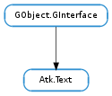

| Subclasses: | Atk.NoOpObject, Cally.Text |
|---|
| static | free_ranges(ranges) |
| add_selection(start_offset, end_offset) | |
| get_bounded_ranges(rect, coord_type, x_clip_type, y_clip_type) | |
| get_caret_offset() | |
| get_character_at_offset(offset) | |
| get_character_count() | |
| get_character_extents(offset, x, y, width, height, coords) | |
| get_default_attributes() | |
| get_n_selections() | |
| get_offset_at_point(x, y, coords) | |
| get_range_extents(start_offset, end_offset, coord_type, rect) | |
| get_run_attributes(offset) | |
| get_selection(selection_num) | |
| get_string_at_offset(offset, granularity) | |
| get_text(start_offset, end_offset) | |
| get_text_after_offset(offset, boundary_type) | |
| get_text_at_offset(offset, boundary_type) | |
| get_text_before_offset(offset, boundary_type) | |
| remove_selection(selection_num) | |
| set_caret_offset(offset) | |
| set_selection(selection_num, start_offset, end_offset) |
None
| Name | Parameters | Return | Description |
|---|---|---|---|
| text-attributes-changed | The “text-attributes-changed” signal is emitted when the text attributes of the text of an object which implements Atk.Text changes. | ||
| text-caret-moved | int | The “text-caret-moved” signal is emitted when the caret position of the text of an object which implements Atk.Text changes. | |
| text-changed | int, int | The “text-changed” signal is emitted when the text of the object which implements the Atk.Text interface changes, This signal will have a detail which is either “insert” or “delete” which identifies whether the text change was an insertion or a deletion. | |
| text-insert | int, int, str | The “text-insert” signal is emitted when a new text is inserted. | |
| text-remove | int, int, str | The “text-remove” signal is emitted when a new text is removed. | |
| text-selection-changed | The “text-selection-changed” signal is emitted when the selected text of an object which implements Atk.Text changes. |
Bases: GObject.GInterface
Atk.Text should be implemented by Atk.Objects on behalf of widgets that have text content which is either attributed or otherwise non-trivial. Atk.Objects whose text content is simple, unattributed, and very brief may expose that content via Atk.Object.get_name instead; however if the text is editable, multi-line, typically longer than three or four words, attributed, selectable, or if the object already uses the ‘name’ ATK property for other information, the Atk.Text interface should be used to expose the text content. In the case of editable text content, Atk.EditableText (a subtype of the Atk.Text interface) should be implemented instead.
Atk.Text provides not only traversal facilities and change notification for text content, but also caret tracking and glyph bounding box calculations. Note that the text strings are exposed as UTF-8, and are therefore potentially multi-byte, and caret-to-byte offset mapping makes no assumptions about the character length; also bounding box glyph-to-offset mapping may be complex for languages which use ligatures.
| Parameters: | ranges ([Atk.TextRange]) – A pointer to an array of Atk.TextRange which is to be freed. |
|---|
Frees the memory associated with an array of Atk.TextRange. It is assumed that the array was returned by the function Atk.Text.get_bounded_ranges and is None terminated.
| Parameters: | |
|---|---|
| Returns: | |
| Return type: |
Adds a selection bounded by the specified offsets.
| Parameters: |
|
|---|---|
| Returns: | Array of Atk.TextRange. The last element of the array returned by this function will be None. |
| Return type: |
Get the ranges of text in the specified bounding box.
| Returns: | the offset position of the caret (cursor). |
|---|---|
| Return type: | int |
Gets the offset position of the caret (cursor).
| Parameters: | offset (int) – position |
|---|---|
| Returns: | the character at offset. |
| Return type: | unicode |
Gets the specified text.
| Parameters: |
|
|---|
Get the bounding box containing the glyph representing the character at a particular text offset.
| Returns: | an Atk.AttributeSet which contains the default values of attributes. at offset. this #atkattributeset should be freed by a call to Atk.Attribute.set_free (). |
|---|---|
| Return type: | [int] |
Creates an Atk.AttributeSet which consists of the default values of attributes for the text. See the enum Atk.TextAttribute for types of text attributes that can be returned. Note that other attributes may also be returned.
| Returns: | The number of selected regions, or -1 if a failure occurred. |
|---|---|
| Return type: | int |
Gets the number of selected regions.
| Parameters: |
|
|---|---|
| Returns: | the offset to the character which is located at the specified x and y coordinates. |
| Return type: |
Gets the offset of the character located at coordinates x and y. x and y are interpreted as being relative to the screen or this widget’s window depending on coords.
| Parameters: |
|
|---|
Get the bounding box for text within the specified range.
| Parameters: | offset (int) – the offset at which to get the attributes, -1 means the offset of the character to be inserted at the caret location. |
|---|---|
| Returns: | an Atk.AttributeSet which contains the attributes explicitly set at offset. This Atk.AttributeSet should be freed by a call to Atk.Attribute.set_free (). |
| Return type: | [int], start_offset: int, end_offset: int |
Creates an Atk.AttributeSet which consists of the attributes explicitly set at the position offset in the text. start_offset and end_offset are set to the start and end of the range around offset where the attributes are invariant. Note that end_offset is the offset of the first character after the range. See the enum Atk.TextAttribute for types of text attributes that can be returned. Note that other attributes may also be returned.
| Parameters: | selection_num (int) – The selection number. The selected regions are assigned numbers that correspond to how far the region is from the start of the text. The selected region closest to the beginning of the text region is assigned the number 0, etc. Note that adding, moving or deleting a selected region can change the numbering. |
|---|---|
| Returns: | a newly allocated string containing the selected text. Use GLib.free () to free the returned string. |
| Return type: | str, start_offset: int, end_offset: int |
Gets the text from the specified selection.
| Parameters: |
|
|---|---|
| Returns: | a newly allocated string containing the text at the offset bounded by the specified granularity. Use GLib.free () to free the returned string. Returns None if the offset is invalid or no implementation is available. |
| Return type: |
Gets a portion of the text exposed through an Atk.Text according to a given offset and a specific granularity, along with the start and end offsets defining the boundaries of such a portion of text.
If granularity is Atk.TextGranularity.CHAR the character at the offset is returned.
If granularity is Atk.TextGranularity.WORD the returned string is from the word start at or before the offset to the word start after the offset.
The returned string will contain the word at the offset if the offset is inside a word and will contain the word before the offset if the offset is not inside a word.
If granularity is Atk.TextGranularity.SENTENCE the returned string is from the sentence start at or before the offset to the sentence start after the offset.
The returned string will contain the sentence at the offset if the offset is inside a sentence and will contain the sentence before the offset if the offset is not inside a sentence.
If granularity is Atk.TextGranularity.LINE the returned string is from the line start at or before the offset to the line start after the offset.
If granularity is Atk.TextGranularity.PARAGRAPH the returned string is from the start of the paragraph at or before the offset to the start of the following paragraph after the offset.
| Parameters: | |
|---|---|
| Returns: | a newly allocated string containing the text from start_offset up to, but not including end_offset. Use GLib.free () to free the returned string. |
| Return type: |
Gets the specified text.
| Parameters: |
|
|---|---|
| Returns: | a newly allocated string containing the text after offset bounded by the specified boundary_type. Use GLib.free () to free the returned string. |
| Return type: |
Gets the specified text.
| Parameters: |
|
|---|---|
| Returns: | a newly allocated string containing the text at offset bounded by the specified boundary_type. Use GLib.free () to free the returned string. |
| Return type: |
Gets the specified text.
If the boundary_type if Atk.TextBoundary.CHAR the character at the offset is returned.
If the boundary_type is Atk.TextBoundary.WORD_START the returned string is from the word start at or before the offset to the word start after the offset.
The returned string will contain the word at the offset if the offset is inside a word and will contain the word before the offset if the offset is not inside a word.
If the boundary type is Atk.TextBoundary.SENTENCE_START the returned string is from the sentence start at or before the offset to the sentence start after the offset.
The returned string will contain the sentence at the offset if the offset is inside a sentence and will contain the sentence before the offset if the offset is not inside a sentence.
If the boundary type is Atk.TextBoundary.LINE_START the returned string is from the line start at or before the offset to the line start after the offset.
| Parameters: |
|
|---|---|
| Returns: | a newly allocated string containing the text before offset bounded by the specified boundary_type. Use GLib.free () to free the returned string. |
| Return type: |
Gets the specified text.
| Parameters: | selection_num (int) – The selection number. The selected regions are assigned numbers that correspond to how far the region is from the start of the text. The selected region closest to the beginning of the text region is assigned the number 0, etc. Note that adding, moving or deleting a selected region can change the numbering. |
|---|---|
| Returns: | True if success, False otherwise |
| Return type: | bool |
Removes the specified selection.
| Parameters: | offset (int) – position |
|---|---|
| Returns: | True if success, False otherwise. |
| Return type: | bool |
Sets the caret (cursor) position to the specified offset.
| Parameters: |
|
|---|---|
| Returns: | |
| Return type: |
Changes the start and end offset of the specified selection.